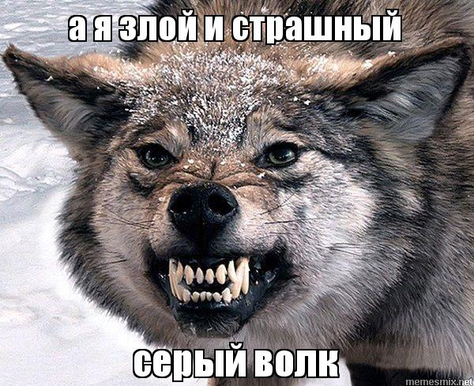

Безполезная статья о жизни волчары

Волки обитают в горах, лесах и на равнинах Северного полушария. Подобно всем живым существам, они, как говорят биологи, занимают в дикой природе свою экологическую нишу. На территориях своего обитания волки являются самой много численной группой из тех хищников, что охотятся на крупных млекопитающих.